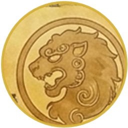

LE CLAN DU LION
Force armée prééminente de Rokugan, le Clan du Lion incarne la rigueur martiale, la mémoire historique et la fidélité inconditionnelle au Trône d'Émeraude. Fondé par le Kami Akodo, le clan fait reposer sa puissance sur la science tactique, le culte des ancêtres héroïques et l'application stricte des préceptes de l'Honneur et du Devoir.

1. Origine Sacrée & Vocation Martiale
Lors de la chute des Kami, Akodo se distingua par son génie de la guerre et sa maîtrise tactique. Auteur du traité militaire fondamental Commandement (Leadership), il posa les bases de la doctrine de bataille étudiée par tous les officiers de Rokugan.
Le clan s'est développé autour de piliers complémentaires : l'art stratégique d'Akodo, la ferveur offensive des troupes de la matriarche Matsu, l'éloquence historique d'Ikoma et les traditions chamaniques des Kitsu, gardiens des lignées et interlocuteurs des ancêtres héroïques résidant dans le Yomi.
Ocre doré, fauve, jaune safran et rouge bordeaux. Armures laquées soignées, daisho porté avec solennité et crinières de casque en crin teinté lors des manœuvres de guerre.
Histoire clanique : The Great Clans, p. 107-115. Traité du Bushido : Emerald Empire, p. 28-30. Science du combat de masse : The Book of Fire, p. 52-56.
Profil de Création PJ
- Vertu Fondamentale : Honneur (Meiyo)
- Honneur de Base : 6,5 (Très élevé)
- Kami Fondateur : Akodo
- Forteresse Principale : Shiro Akodo
- Armes Clés : Katana, Yari, No-Dachi, Arc
- Livre de Base 4e : Pages 116-119
2. Lignées du Clan & Familles Vassales (Familles Bushi en tête)
Livre de Base 4e Édition, p. 117-120 ; The Great Clans, p. 117-126, 286-287, 290-291.Famille Akodo
+1 AgilitéDescendants directs du fondateur Akodo et cœur tactique de l'armée impériale. Modèles de discipline, de maîtrise émotionnelle et de sens du devoir, ils commandent les légions selon les préceptes de l'art de la guerre.
🌿 Familles Vassales (3 : Katai, Seizuka, Shimizu (déchue)) ▾
- Katai : Anciens rônin fidèles à l'Impératrice Yugozohime contre le Gozoku, reçus chez les Akodo pour veiller sur les forêts de Kokoro Nezuban Mori et en fournir le bois d'œuvre. (Great Clans p. 286)
- Seizuka : Fondée au XIIe siècle par l'explorateur Akodo Seizuka dont les cartes permirent la prise de Toshi Ranbo en 1153 ; cartographes militaires d'élite du clan. (Great Clans p. 291)
- Shimizu (déchue) : Ancienne lignée récompensée au VIIIe siècle pour avoir démasqué un sorcier corrompu, puis entièrement purgée et rayée des annales au IXe siècle après avoir sombré dans le déshonneur. (Great Clans p. 286)
Famille Matsu
+1 ForcePlus vaste famille du clan et force de choc la plus féroce de Rokugan. Issues de l'héritage matriarcal de Dame Matsu, leurs troupes priment l'assaut frontal, l'honneur inflexible et la fierté guerrière, entretenant une rivalité légendaire avec la Grue.
🌿 Familles Vassales (2 : Ikeda, Koritome) ▾
- Ikeda : Fondée après le retour de la Licorne (fin VIIIe s.) par un Matsu ayant étudié leurs tactiques équestres ; maîtres de la cavalerie lourde du Lion. (Great Clans p. 286)
- Koritome : Créée par Hantei VIII en hommage au héros Matsu Koritome à la Bataille du Cerf Blanc en réunissant les deux cents meilleurs archers du clan. (Great Clans p. 286-287)
Famille Ikoma
+1 IntuitionChroniqueurs, historiens et orateurs du clan. Les Ikoma utilisent le récit épique et la rhétorique pour galvaniser les armées, défendre le prestige du Lion à la cour et accomplir secrètement les tâches indignes de leurs frères honorables.
🌿 Familles Vassales (2 : Hosokawa, Murame) ▾
- Hosokawa : Descendants d'Ikoma Kyube (VIIIe s.) ; archivistes d'une abnégation austère coordonnant tous les rapports des scribes et historiens Ikoma à travers l'Empire. (Great Clans p. 286)
- Murame : Fondée après la Guerre contre les Ténèbres pour permettre à Ikoma Murame et aux instructeurs du Collège de Guerre de préserver les traditions martiales développées par les Ikoma. (Great Clans p. 290)
Famille Kitsu
+1 IntelligencePrêtres, généalogistes et médiums dépositaires des rites funéraires du clan. Descendant en partie des anciens êtres spirituels kitsu, ils communient avec les ancêtres résidant en Yomi et discernent la pureté des lignées.
🌿 Familles Vassales (2 : Ise, Noroko) ▾
- Ise : Descendants du militant shugenja Kitsu Ise, voués depuis l'aube de l'Empire à traquer et détruire les entités spirituelles dangereuses menaçant les terres Lion. (Great Clans p. 286)
- Noroko : Anciens Kitsu rônin réintégrés après la Guerre contre les Ténèbres pour traquer toute résurgence de corruption spirituelle au sein du clan, souvent aux côtés du Champion de Jade. (Great Clans p. 290-291)
3. Doctrine Martiale & Pratique du Bushido
Références : Livre de Règles 4e Édition, p. 62-63, 91-94 ; Emerald Empire, p. 28-30.Primauté de l'Honneur (Meiyo)
Pour le Lion, l'Honneur n'est pas une simple notion théorique mais la mesure concrète de la valeur de l'âme. Tout acte est évalué selon sa conformité avec la tradition et le devoir envers le seigneur et les ancêtres. Une mort glorieuse est toujours préférable à une victoire obtenue par des expédients déloyaux.
Discipline & Obéissance (Chugo)
La chaîne de commandement possède un caractère sacré. Les samouraïs du Lion apprennent à obéir promptement aux ordres tactiques sans discussion. La cohérence des mouvements de bataillons et la cohésion de groupe priment systématiquement sur les initiatives individuelles non autorisées.
Diplomatie Clanique
La rivalité séculaire avec le Clan de la Grue s'articule autour de l'influence politique et de la frontière des plaines centrales. La duplicité du Scorpion suscite une opposition doctrinale ouverte. La fermeté du Crabe au combat est reconnue, tandis que le détachement du Dragon est souvent considéré comme de l'indécision.
4. Écoles de Base Officielles (Rangs 1 à 5)
Core pp. 116-119 ; Great Clans p. 137 ; Emerald Empire p. 109.Bénéfice : +1 Perception • Honneur : 6.5
Compétences : Art de la Guerre (Bataille de Masse), Défense, Kenjutsu, Kyujutsu, Connaissance : Histoire, Sincérité, une compétence Bugei ou Noble.
Équipement : Armure légère, vêtements robustes, Daisho, 1 arme, nécessaire de voyage, 5 koku.
📜 Techniques d'École (Rangs 1 à 5) ▾
- Rang 1 — La Voie du Lion : En attaquant, choisissez soit d'ignorer la part du ND d'Armure provenant de l'armure adverse (sans ignorer la Réduction), soit de gagner une Augmentation Gratuite. De plus, +1g0 au total de votre premier jet d'attaque en mêlée contre un adversaire dans l'escarmouche, ou contre tout ennemi ayant déclaré une Augmentation contre vous depuis votre dernier Tour (+1g0 max).
- Rang 2 — Force de la Pureté : Ajoutez votre Rang d'Honneur à un seul jet de votre choix durant votre Tour en escarmouche (hors dégâts et hors posture du Centre).
- Rang 3 — Force de mes Ancêtres : Attaques par Action Simple avec les armes portant le mot-clé Samouraï.
- Rang 4 — Triomphe avant la Bataille : 1/escarmouche en phase de Réactions, désignez un ennemi : ignorez ses bonus de Posture au ND d'Armure durant le Round suivant.
- Rang 5 — La Dernière Leçon d'Akodo : Sur un jet Bugei avec Augmentations, si vous atteignez le ND de base mais manquez le ND augmenté, le jet réussit tout de même sans effets des Augmentations.
Bénéfice : +1 Force • Honneur : 6.5
Compétences : Art de la Guerre, Jiujutsu, Kenjutsu (Katana), Kyujutsu, Connaissance : Histoire, deux compétences Bugei.
Équipement : Armure lourde ou légère, vêtements robustes, Daisho, Arme Lourde ou Arme d'Hast, nécessaire de voyage, 5 koku.
📜 Techniques d'École (Rangs 1 à 5) ▾
- Rang 1 — Le Rugissement du Lion : Ajoutez votre Rang d'Honneur au total de tous vos jets de dégâts. En posture d'Assaut, +1,5 m (5') par Tour en sus du bonus normal de posture (sans dépasser le max/Tour).
- Rang 2 — La Fureur de Matsu : En posture d'Assaut, si vous touchez un adversaire choisi à 9 m (30') ou moins, il est figé par la peur (ne peut se déplacer pour quitter son emplacement ; jet Volonté sans malus contre ND = dégâts en phase de Réactions ou fin à la 2e phase de Réactions).
- Rang 3 — La Charge du Lion : Attaques de mêlée par Action Simple au lieu d'Action Complexe.
- Rang 4 — Le Courage de Matsu : Ignorez (Rang d'Honneur) points de malus de Blessures, ou 2 × Rang d'Honneur en posture d'Assaut.
- Rang 5 — La Victoire du Lion : 1/rencontre après un jet de dégâts, 1 Vide par Action Gratuite fait exploser tous vos dés gardés (y compris les non-10).
📜 Détails des Écoles Complémentaires (2) ▾
+1 Agilité • H 5.5 • Dressage 2. R1 : lien avec 1 lion de guerre (ordonner d'Attaquer par Action Complexe ; sinon Garde). R2 : 2e lion ; trait Rapide 2 ; +1 palier Blessures aux lions (36: +15, 60: Mort). R3 : Action Simple (mains nues, katana, wakizashi, magari-yari, nage-yari, couteaux) et ordonner d'Attaquer par Action Simple. R4 : 2 attaques de griffes/Round ; +2g1 dégâts ensemble ; lion peut bouger (Action Simple). R5 : 3e lion ; +10 ND Armure, +2 Réduction et Peur +2.
+1 Intuition • H 3.5. R1 : aucune perte d'Honneur pour Compétences Dégradantes au service du Lion ; Action Gratuite (Rang d'École/jour) donne +1g0 attaque et Jets Opposés contre jusqu'à Rang d'École ennemis. R2 : +1g0 à tous jets de Compétences d'École. R3 : 1/Round Action Gratuite, −3 points d'Honneur pour +2g1 attaque, dégâts et Jets Sociaux Opposés. R4 : Action Simple arme de mêlée. R5 : 1 Vide lance Courtisan/Intuition vs Étiquette/Intuition pour soustraire (Intuition + Honneur cible) à ses attaques et Jets Sociaux Opposés pendant Rang d'École heures.
Bénéfice : +1 Intelligence • Honneur : 6.5
Compétences : Courtisan, Étiquette, Connaissance : Histoire (Clan du Lion), Art de la Scène : Conteur, Sincérité (Honnêteté), une compétence Noble, une compétence Bugei.
Équipement : Vêtements traditionnels, Wakizashi, Couteau, nécessaire de calligraphie, nécessaire de voyage, 5 koku.
📜 Techniques d'École (Rangs 1 à 5) ▾
- Rang 1 — Le Héraut de la Gloire : Recevez gratuitement Mémoire Exacte (remboursé si déjà acquis). Conteur/Intuition ND 20 loue un exploit et confère +(Rang d'École) points de Gloire (jusqu'à Rang d'École fois/personne/mois).
- Rang 2 — Le Cœur du Lion : Aucune perte d'Honneur/Gloire pour manifester vos émotions pour un autre Lion ou une noble cause ; +5 par Rang d'École au ND pour vous influencer par Intimidation ou Tentation.
- Rang 3 — La Voix des Ancêtres : Oratoire/Intuition ND 15 + 5/allié (+5 supplémentaires hors Lion) permet à chaque allié d'ajouter son Rang d'Honneur à un jet de Compétence durant ce combat.
- Rang 4 — La Force de la Tradition : Action Simple (Rang d'École/session), Conteur/Intuition ND 25 : permet à l'allié de relancer un échec dans la journée avec +Honneur en dés lancés (−2 Honneur si le 2e échoue).
- Rang 5 — Chaque Lion est ton Frère : 5/session en Jet Social Opposé, ajoutez votre rang en Conteur en dés non gardés.
Bénéfice : +1 Perception • Honneur : 6.5 • Affinité/Déficience : Eau / Feu.
Compétences : Art de la Guerre, Calligraphie (Chiffre), Étiquette, Connaissance : Histoire, Connaissance : Théologie, Art de la Magie, une compétence Noble ou Bugei.
Sorts : Sens, Communion, Convocation, 3 Eau, 2 Air, 1 Terre.
Équipement : Robes, Wakizashi, Couteau, Sacoche à parchemins, nécessaire de voyage, 5 koku.
📜 Détails & Techniques d'École ▾
Technique — Les Yeux des Ancêtres : Jet d'Incantation (comme sort d'Eau) ND = 5 × Volonté cible révèle tous ses Avantages et Désavantages Spirituels ; 1 Vide annule l'un de ces Avantages Spirituels pendant (Rang d'École) minutes. Augmentation Gratuite sur tout sort portant le mot-clé Bataille.
5. Écoles Avancées & Voies Alternatives Officielles
Textes officiels complets (Core pp. 248, 253 ; Great Clans pp. 138-140 ; Air/Earth ; Strongholds ; IH1).⚖️ Règles & Effets détaillés ▾
R1 : +10 ND d'Armure en posture d'Assaut.
R2 : Ennemis d'Honneur inférieur à ≤ 9 m (30') ne peuvent relancer leurs 10 (annulé pour la rencontre si cible dépense 2 Vide en Réactions).
R3 : Si attaquée avant d'avoir agi ce Round, dépensez 1 Vide pour contre-attaquer immédiatement par Action Simple (résolu avant ; il ne reste qu'1 Action Simple à votre Tour).
⚖️ Règles & Effets détaillés ▾
R1 : Relancez 1 dé par Tour de Bataille de Masse et 1 dé sur toute attaque comportant ≥ 1 Augmentation.
R2 : Dépensez 1 Vide pour choisir n'importe quelle Opportunité Héroïque en Bataille de Masse.
R3 : Dépensez 1 Vide pour gagner +5g1 sur un jet de Bataille ou +2g2 sur un jet Bugei (au lieu de +1g1).
⚖️ Règles & Effets détaillés ▾
Conserve bénéfices/équipement R1. 1/Tour ajoutez votre Rang d'Honneur à un jet de dégâts (−5 ND Armure jusqu'à la phase de Réactions suivante). +1g0 aux jets d'attaque en posture d'Assaut.
⚖️ Règles & Effets détaillés ▾
Au sabre et en posture d'Attaque, ajoutez votre Rang d'Honneur au ND d'Armure contre la 1re attaque de mêlée de chaque Round. 1/escarmouche, activez un Kata par Action Gratuite.
⚖️ Règles & Effets détaillés ▾
Scout (R2, Bat. 2, Chasse 3) : Déplacement normal en Discrétion ; +1g0 Discrétion et Bugei d'Agilité. Paragon (R3, Vide 4, Kenjutsu 5, Honneur 7) : 1 attaque/Tour par Action Simple ; 1/escarmouche 1 Vide double votre Honneur pour vos Techniques (peut dépasser 10).
⚖️ Règles & Effets détaillés ▾
Siege Strategist (R4/5) : Opportunité Héroïque auto en siège offensif et −50 % Réduction des structures. Ikoma Warden (R2) : Monté +1g0 Bugei ; +2g2 par Vide sur Équitation/Enquête. Lioness Legion (R2) : +1,5 m (5') en Assaut ; Déplacement Complexe Eau × 7,5 m (25').
⚖️ Règles & Effets détaillés ▾
R1 : Détecte portails spirituels (Rang × 10 miles secret ND 25 ; auto ≤ Rang miles). +1 Rang Shugenja.
R2 : +0g1 dégâts à mains nues. Méditation ND 30 projette votre âme en Meido ou Yomi pour parler aux ancêtres.
R3 : Emmenez 1 passager silencieux en Yomi/Meido (s'il réussit Méditation). +1 Rang Shugenja.
⚖️ Règles & Effets détaillés ▾
Action Gratuite + 1 emplacement = +1g0 sur tout jet basé sur la Force (dont dégâts de mêlée) ou sur un jet d'Incantation d'un sort avec mot-clé Bataille.
⚖️ Règles & Effets détaillés ▾
Action Complexe + 2 emplacements d'un Élément + 1 Vide invoque un guerrier spectral (Anneaux 2, Élément sacrifié 3, Kenjutsu 3, Défense 2, daisho, armure légère) pour (Rang) heures.
Aucune école avancée ou voie alternative spécifique pour ce filtre.